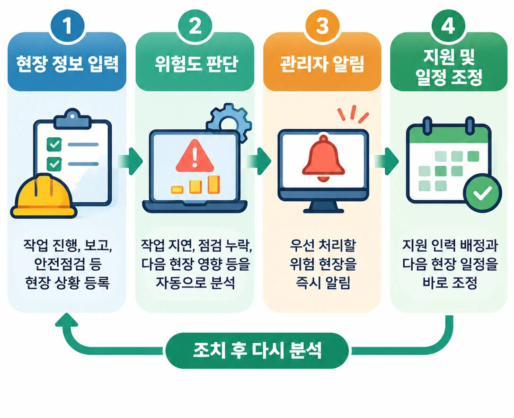

H
(주)하나정보통신벤처기업확인(혁신성장유형) 이의신청 보완자료
보완자료 10 / 12
현장 실증으로 확인하고,
데이터로 정확하게, 그리고 업계로
2027년부터 2029년까지 연도별 목표 · 개발 항목 · 검증 방법을 정리했습니다. 모두 계획이며 실적이 아닙니다. 지금의 규칙 기반 구조를 유지하면서, 현장 기록으로 기준을 보정하는 방향입니다.
2027 실증 · 안정화2028 데이터 기반 고도화2029 확산 · 사업화
이 문서가 답하는 보완 요청
- 2027~2029 고도화 계획 (보완 요청 3)
- 연도별 목표 · 개발 항목 · 완료 기준
- 향후 발전 가능성과 필요한 자원
3개년 로드맵
한 해에 한 가지씩 — 확인 → 보정 → 확산
2027 계획
현장 실증 · 운영 안정화
- 운영 DB · 배포 연결 (회사 승인 후)
- 시험 A~D — 실제 기기 · 업무 · 안전 · 수기 vs AX
- 자사 기사 전원 실제 업무 사용
- 오프라인 보관함 · 사진 별도 백업
- 작업 전 점검(TBM) 기록 양식 연계
완료 기준
시험 A 결과표 서명 · 실제 업무 사건 기록 · 비교시험 D 측정 완료
2028 계획
데이터 기반 고도화
- 실측 작업시간 · 이동시간 기록 축적
- 현장 유형별 작업시간 기준값 · 구간별 이동시간 평균(통계)
- 등급 기준 · 우선순위 가중치 보정 v2
- 다음날 재방문까지 이어지는 일정 영향
- 원청 · 협력사 보고 양식 내보내기
완료 기준
보정 전후 같은 기록으로 재계산 비교 · 규칙 버전 올림(chain-risk 2.x)
2029 계획
확산 · 사업화
- 다른 정보통신공사업체 보급(회사별 분리)
- 지점 · 관리자 여러 명 구조
- 업종별 안전점검 항목 세트
- 작업시간 추정 정확도 연구 — 통계 · 학습 모델은 규칙 결과와 비교 검증 후 도입 여부 결정
- 추가 특허 출원 검토
완료 기준
유료 고객사 확보 · 업체별 운영 기록 · 연구 결과 보고

개념 그림회사 개념 그림 — 고도화는 이 고리(입력 → 판단 → 알림 → 지원 · 조정 → 다시 분석)의 기준값을 현장 데이터로 맞추는 일입니다.무엇이 정확해지나
| 대상 | 지금 | 2028 이후 |
|---|
| 이동시간 | 관리자 입력값 | 구간별 실측 평균 |
| 작업시간 | 예정 소요 유지 가정 | 현장 유형별 기준값 |
| 위험 등급 | 10분 · 30분 (설정값) | 실측으로 보정 |
| 우선순위 | 가중치 초기값 | 관리자 판단과 비교 보정 |
현재 기술을 AI 예측으로 바꾸는 계획이 아닙니다. 계산 근거가 보이는 규칙 구조를 유지하고, 기준값을 현장 데이터로 정합니다.학습 모델은 2029년 연구 과제로만 두며, 규칙 결과보다 나은지 검증된 경우에만 보조로 씁니다.
개발 항목 상세
항목마다 왜 · 무엇을 · 어떻게 확인하는지
| 연도 | 개발 항목 | 왜 필요한가 (근거) | 완료 확인 방법 |
|---|
| 2027 | 운영 연결 · 시험 A~D | 현장 실증 0건 — 실제 기기 · 업무 기록이 필요(09) | 시험 A 23개 항목 결과표 · 사건 증빙 |
| 2027 | 오프라인 보관함 · 사진 백업 | 현장 통신 끊김 · 사진 보관 기한(운영 준비 문서) | 끊김 시험 · 백업 복원 시험 |
| 2027 | 작업 전 점검(TBM) 기록 연계 | TBM 상시평가 인정 · 위험성평가 과태료 2027~2028 단계 적용[S16,S17] | 점검 기록 → 위험성평가 양식 출력 |
| 2028 | 작업 · 이동시간 기준값 | 지금은 입력값 · 작업시간 유지 가정(04 한계) | 실측 기록과 계산값 차이 비교 |
| 2028 | 등급 · 가중치 보정 v2 | 10분 · 30분 기준은 초기 설정값 | 같은 기록 재계산 · 관리자 판단과 비교 |
| 2028 | 다음날 재방문 영향 | ‘당일 못 가고 다음날 간 적’(인터뷰) | 여러 날 일정 시험 시나리오 |
| 2029 | 여러 회사 · 지점 | 같은 업종 업체 13,096개사(2025 실적신고 대상)[S1] | 회사별 데이터 분리 시험 · 권한 시험 |
| 2029 | 작업시간 추정 연구 | 기준값 보정 다음 단계 | 규칙 대비 오차 비교 보고(도입 전) |
모든 항목은 지금 있는 엔진 위에 쌓습니다 — 규칙 버전을 올리고, 같은 기록으로 이전 버전과 결과를 비교한 뒤 바꿉니다.판단 기록에 규칙 버전이 남기 때문에, 언제 어떤 기준으로 계산했는지 나중에도 확인됩니다.
[S1] 한국정보통신공사협회 실적신고 현황(2025년도) · [S16] 고용노동부 2023-03-06 · [S17] 고용노동부 2026-11-04 — 원문 주소: docs/appeal-package/RESEARCH_SOURCES.md